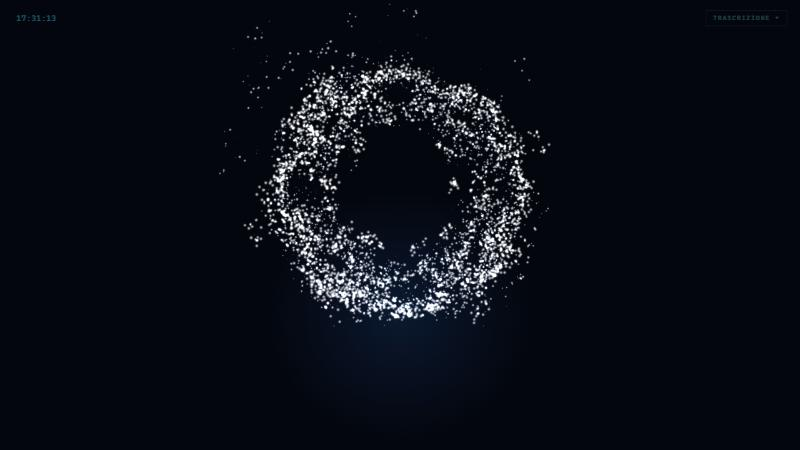
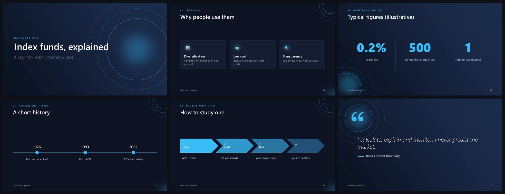

I build connected systems with sensors, data and AI, and I am also interested in web
development. I study at ITS Academy Alto Adriatico and I want to work on IoT, web and
digital transformation projects in an international team.
Looking for an Erasmus+ traineeship · January – April 2027
I am a second-year student of Digital Transition Architect (IoT & Industry 4.0)
at ITS Academy Alto Adriatico in Pordenone. I studied business and finance before, so I like
to see both sides of a project: the technology and the reason it is useful for a company.
I learn best by building things. I worked with SQL Server during my IT internship, I built an
IoT system with Arduino, MQTT and Node-RED, and I am building my own AI assistant at home.
I use AI tools every day, and I want to use them in real IoT and Industry 4.0 projects.
I am also interested in web development. I know HTML, CSS and JavaScript,
and I built this website with the help of AI tools, including the 3D sphere at the top,
which comes from my Baba project.
Interests: IoT · AI · Web developmentPordenone, ItalyITS Academy Alto Adriatico (EQF 5)Italian (native) · English (B1)
Projects
Two projects from 2026: one with my ITS team, one on my own.
Smart Warehouse
ITS team project · 2026
IoT inventory monitoring for warehouse shelves
A system that measures how full each shelf is, using ultrasonic sensors. The data goes in
real time to a live dashboard, and the system sends an alert when a shelf is almost empty.
Ultrasonic sensorsshelf fill level
→
ArduinoC++ firmware, filtering
→
MQTTmessages
→
Node-REDlogic & alerts
→
MySQL + dashboardhistory & live view
My role: hardware, C++ firmware, Node-RED integration and signal filtering
(to clean the noisy sensor readings). I also wrote the 23-page user manual.
An AI assistant that runs on my Windows PC and acts for me
Baba is a personal assistant connected to my email, calendar, files and notes. I talk
to it through a desktop app with an animated particle sphere — the one at the top of
this page — and it answers with its voice too.
It also has a second role: it is my finance and real-estate mentor.
It teaches me step by step, works with real market data and remembers my progress.

The desktop app: about 5,000 particles that move while Baba speaks.
~47tools
11areas
24/7starts with Windows
Email & calendar
Reads and summarises Gmail, writes drafts, manages Google Calendar events.
Files & documents
Finds files from an approximate name, writes in Word and Excel, makes PowerPoint decks and PDFs.
Web research
Searches the web, reads pages and PDFs, and gives numbered sources.
Memory
Remembers facts between sessions and uses an Obsidian notes vault as its knowledge base.
Finance & real estate
A study path, delayed quotes, a watchlist, my own price alerts and rental analysis.
Proactive
Morning briefing, inbox summary and alerts sent as push notifications to my phone.
How it works
Desktop app · terminal · schedulertext or voice
→
One "brain"Python / FastAPI + Claude API
→
Toolsfiles, Office, web, finance
+
Gmail & Calendarvia MCP
+
MemorySQLite + Obsidian
All channels send messages to one endpoint. The AI model decides which tools to use;
the tools are plain Python with strict limits. Repetitive work (prices, feeds, rules)
runs in Python for free, so the paid AI model works only when it is really needed.

A PowerPoint deck that Baba made from one request.
Its main rule:"I calculate, explain and monitor. I never predict the market."
Baba gives facts and reasons to help me decide — it never tells me what to buy or sell.
How I built it: I designed Baba and directed every step: what it must do,
how the parts talk to each other, the safety rules, and the tests in real daily use.
Most of the code was written with Claude Code, an AI coding assistant,
following my instructions. I tested every feature and fixed the problems together with it.
What I learned
How to split a big project into small stages and finish one before starting the next.
How an AI agent works: the model, the tools, the limits and the costs.
How to connect external services (Gmail, Google Calendar) in a safe way.
How to keep private data private: the source code stays in a private repository.
Technical work and the jobs that taught me teamwork.
May – Jul 2026
IT Intern
Tempestive S.p.A. · Pordenone
Developed and debugged SQL Server functions for Prodactivity, an internal ticketing system on the LoCoMotiv low-code platform.
Implemented role-based visibility, so each user sees only the tickets of their own areas.
Configured WebParts (web pages) and supported a data migration between databases.
2024 – 2026
Other work
Hospitality, production, delivery
Waiting staff at Hotel Oasi, Lignano Sabbiadoro (summer 2025 and 2026), production
operator at Legno Ver (2025), delivery rider at BonGustaio (2024). Customer service,
teamwork and reliability under pressure.
Skills
Tools and technologies I have used in projects or at work.